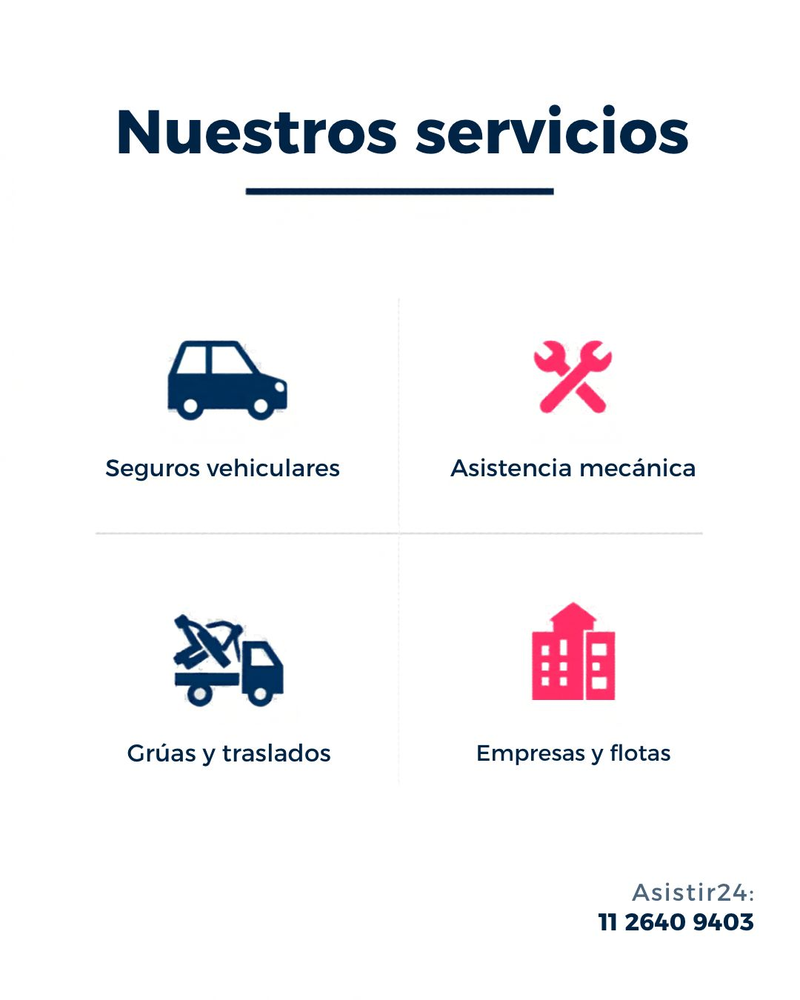

🚚
Grúas y traslados
Coordinación de unidades para remolque y traslado según tipo de vehículo y necesidad.
Coordinamos asistencia vehicular con una red de prestadores para resolver emergencias, traslados y servicios rápidos de forma ágil y ordenada.

Atención para vehículos particulares, empresas, flotas y operaciones de asistencia.
Coordinación de unidades para remolque y traslado según tipo de vehículo y necesidad.
Asistencia ante fallas que puedan resolverse en el lugar o requieran derivación.
Paso de corriente y asistencia de batería para volver a poner el vehículo en marcha.
Apoyo ante pinchaduras, cambio de rueda y situaciones compatibles con asistencia móvil.
Asistencia coordinada ante falta de combustible, según disponibilidad y zona.
Respuesta rápida para verificaciones, traslado de elementos y asistencias compatibles con moto.
Podemos coordinar servicios recurrentes, atención de flotas y necesidades de asistencia con seguimiento operativo.
Contactá a Asistir24 para coordinar el servicio y validar disponibilidad en tu zona.
Hablar por WhatsApp